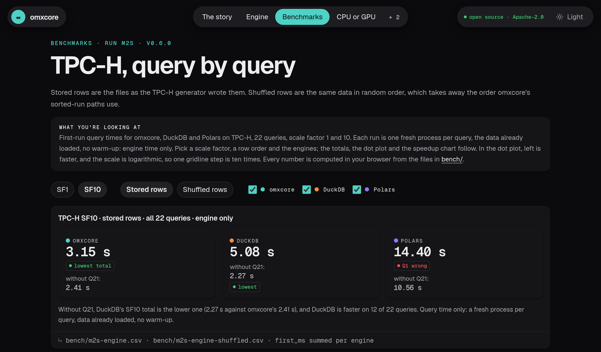
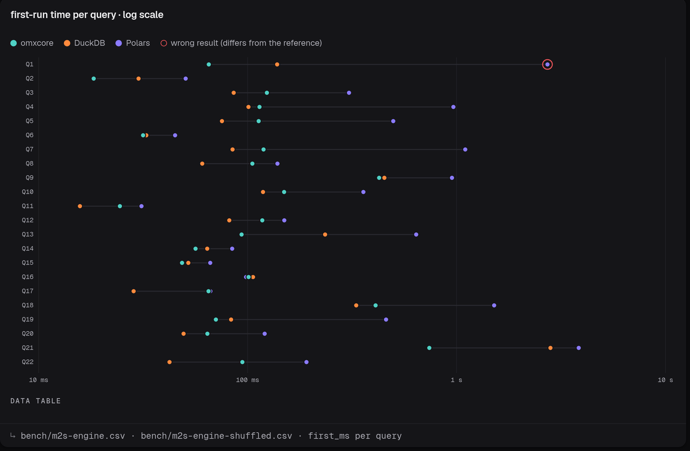

The data engine for the agent era: one native library, no Python inside, over the CSV and Parquet files you already have.
arrow keys, space or swipe · 16 slides, about three minutes
Most workstations have one. Analytics engines run on the CPU and leave it idle.
CSV and Parquet. Most tools want you to import them first, into their own format.
An agent needs exact answers, and errors it can fix in one round.

Not a server, not a database. It links into your app, or runs as one small program.
Three ways in: mx in a terminal, Python, or Mojo.
the real benchmarks page · every number computed from docs/bench/
Python on top, a C++ or Rust planner, CUDA kernels. Three languages and glue between them.
omxcore: all Mojo, compiled ahead of time
Reads less. “columns read: 3 of 16” is in the notes.
Streams. A big file is one chunk per row group, so it never has to fit.
Shows its work. Every answer carries what the planner decided.
| A 20M-row streamed query | CPU | GPU | AUTO picks |
|---|---|---|---|
| 12 cores, light plan | 0.109 s | 0.132 s | CPU |
| 4 cores, heavy plan | 0.366 s | 0.178 s | GPU |
| 2 cores, heavy plan | 0.597 s | 0.220 s | GPU · 2.7x |
informal · RTX 3090, a shared Ryzen · docs/site/bench/engine-informal.json (gpu) · NVIDIA today
a real run of build/mx on TPC-H SF1, 2026-10-29 · paths and long numbers shortened · the flags: docs/omxcore-mojo-api.md, “The mx command line”
import omxcore as mx # 0.6.0 on PyPI: import mxframe as mx
lf = mx.scan_parquet("lineitem.parquet")
out = (lf.filter(mx.col("l_quantity") < 24)
.groupby("l_returnflag")
.agg(mx.col("l_extendedprice").sum().alias("revenue"))
.sort("l_returnflag")
.compute(device="cpu")) # nothing runs until here; a pyarrow Table
print(out.to_pandas())
# or plain SQL over named tables
t = mx.scan_parquet("t.parquet").compute()
print(mx.sql("SELECT dept, SUM(x) AS s FROM t GROUP BY dept", t=t).compute())device: "auto" (the default), "cpu" or "gpu" · .explain() prints the optimized plan
from omxcore import read_csv, CsvOptions, Query, Frame, col, sum, count, AUTO
var csv = read_csv(path, CsvOptions()) # parallel, typed, with an import report
var orders = csv.take_table().share()
var region = orders.column("region")
var out = (Query(orders)
.where(col("qty") > 2)
.group_by(col("region"), groups=len(orders.dictionary(region)))
.agg(sum(col("revenue")), count())
.compute(AUTO)) # CPU or GPU; out.device says which
var f = Frame(orders) # edits on top of shared data, no copy
f.set_text(f.column("revenue"), 0, "99.00")
f.formula("net = revenue - qty") # decimals stay exact scaled integersthis is how omxplorer links the engine: one package, build/omxcore.mojoc
var cat = Catalog()
cat.add_table("orders", orders) # a table in memory
cat.add_scan("big", scan_parquet(path)) # a file, read a row group at a time
var r = sql(cat, "SELECT region, sum(revenue) AS total FROM orders "
"WHERE qty > 2 GROUP BY region "
"ORDER BY total DESC LIMIT 10")
r.table; r.notes; r.ms; r.device # the answer, and how it ran
var f = sql(cat, "SELECT region, qty FROM orders QUALIFY row_number() "
"OVER (PARTITION BY region ORDER BY qty DESC) = 1")
cat.view("big_orders", "SELECT region, qty FROM orders WHERE qty >= 5")new in stable 834ef9a: WITH, subqueries, UNION / INTERSECT / EXCEPT, QUALIFY, views
v0.6.0 release run · query time only, a fresh process per query · docs/bench/m2s-engine.csv, first_ms summed · every omxcore answer equal to DuckDB's · Polars' Q1 is wrong
Honestly: Q21 carries the lead. Without it, DuckDB's total is lower: 2.27 s against 2.41 s.

DuckDB is faster on 12 of 22, mostly the join-heavy ones.
omxcore's big wins: Q21 0.74 s vs 2.81 s, Q13 94 vs 235 ms, Q1 65 vs 138 ms.
docs/bench/m2s-engine.md · SF10, engine-only
WITH, IN / EXISTS, correlated ones made into joins, UNION / INTERSECT / EXCEPT.
row_number, rank, lag, lead, running totals and moving averages.
Inner, left, semi, anti; 3 to 9 tables with a planner.
A 1.6 GB file through 72 MB. Sorts spill to disk.
Money is a scaled integer. Sums match to the cent.
Line, column and a “did you mean” hint, as JSON.
Every planner decision, in the notes of every answer.
A Frame over a file: change cells, undo, save back to Parquet.
STABLE.md · 72 MB: docs/site/bench/engine-informal.json (memory), informal
STABLE.md · docs/plan.md · docs/site/bench/engine-informal.json (multiway) · docs/reference.md
abhisheksreesaila.github.io/omxcore · github.com/abhisheksreesaila/omxcore
the flagship app it powers
write once, native everywhere
local AI, on the same GPU
the design language
Read on: GitHub · every query · the Mojo API · omxlabs